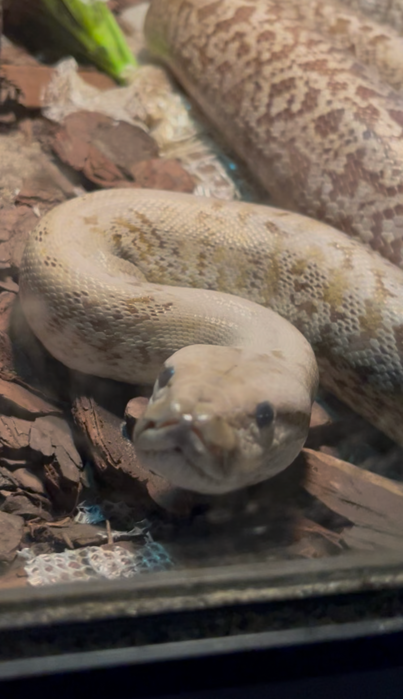

Ryot, our albino ball python, holds a special place in our hearts because she was the first reptile ever taken into the rescue. Her inspiring comeback story continues to fuel our passion for exotics to this day.
In 2018, Ryot arrived in a heartbreaking condition. She was being kept in a dark tank with no lighting or heat. She was also covered in painful, infected rat bites from being fed live prey. Ryot needed immediate help, so we acted fast. Fortunately, Ryot was full of spirit and resilient, and she made an incredible recovery.
Scarlet joined the rescue along with two ball pythons. Her previous owner had to move out of the country, so we took in their three snakes. Scarlet loves to climb; her favorite foods are large frozen-thawed rats and the occasional bird.
We present Scarlet to guests who want to overcome their fear of snakes. Her calm and curious temperament makes her an excellent snake ambassador.
Dez is a stunning reticulated python. He is approximately 14 feet long and weighs around 30 pounds. Despite his impressive size, Dez is a picky eater; he prefers to eat large rats and occasionally a guinea pig!
Dez came to us from a gentleman after he had a child. He struggled keeping up with his snake's care while raising a child. He still calls for updates and misses his pet dearly.

In 2022, When Salazar arrived at the rescue, he could fit inside a sandwich container. Now, he's about 8 feet long, 2 inches in diameter, and weighs around 15 to 20 pounds.
Sal is a calm and friendly snake who enjoys exercise time outside his enclosure.